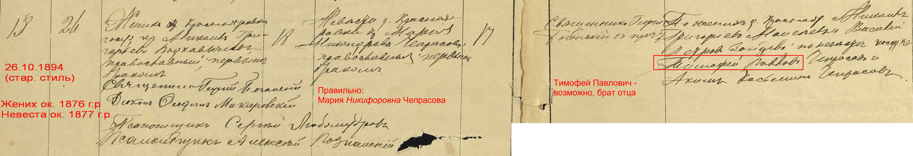

Михаил Григорьевич Подковыров

Родился 2 ноября 1874 г. в д. Краснояровка Борисоглебского уезда Тамбовской губернии (ныне Тамбовская область).
Предки Михаила были однодворцами — потомками мелких служилых людей (детей боярских, казаков, солдат, пушкарей, стрельцов), которых в своё время переселяли на южные рубежи государства для защиты от степных кочевников. Именно так в 1698 г. возникла крепость Борисоглебск, а вокруг неё — и другие новые селения. Одним из них стала Краснояровка. В течение XVIII века однодворцы постепенно переселялись сюда из других мест, в том числе с севера Тамбовщины, где было немало крупных сёл. К примеру, однофамильцы Михаила Григорьевича проживали в те годы в селе Пахотный Угол Тамбовского уезда. Не исключено, что и его предки пришли из этого села. Однако связь с ними установить пока не удалось.
Когда именно Подковыровы пришли в Краснояровку — точно неизвестно, но случилось это не позже 1784 г., а потому их можно считать коренными жителями этой деревни. Здесь, на плодородной тамбовской земле, они вели сельское хозяйство. Но, в отличие от крепостных крестьян, живших по соседству, они были подотчётны государству, а не помещикам.
У своих родителей, Григория Андреевича и Елены Петровны (урождённой Кóваневой), Михаил был единственным общим ребёнком. К несчастью, его мать умерла от чахотки, когда ему не исполнилось и года. А самой ей было не больше 20 лет. Вдовцом отец Михаила оставался недолго и спустя несколько месяцев снова женился. Его новая супруга, Мария Терентьевна, фактически заменила Михаилу мать. Вскоре на свет появилось несколько его единокровных братьев и сестёр. Без сомнения, на плечи Михаила, как на старшего сына, с юных лет легло бремя заботы о них, не считая всех прочих хлопот сельской жизни.
Когда же Михаилу исполнилось 20, его обвенчали с юной односель-чанкой, Марией Чепрасовой. Меньше чем через два года у них родилась первая дочь — Феодосия* (1896–1896). К сожалению, ребёнок не прожил и двух месяцев и умер от диареи. Но уже осенью 1897 г. у супругов родилась ещё одна дочь — Устинья. Позже появились на свет и другие потомки: Василий (1901), Алексей (1904), Григорий (1906), Зоя (1908) и Анна (1916).
По воспоминаниям потомков, Подковыровы жили довольно зажиточно, держали коров и лошадей, и если в конце 1920-х гг. супруги ещё были живы, то вполне могли пострадать от раскулачивания.
Старшая дочь Михаила — Устинья Михайловна — прожила долгую и насыщенную жизнь, большая часть которой прошла на её малой родине, в Краснояровке. Что же касается Василия Михайловича, то, по сведениям военных архивов, он ещё до Второй мировой поселился в Ленинграде, там же был призван на фронт в артиллерийские войска и, по всей видимости, пережил войну, был отмечен наградами. Сведений о других детях в архивах, к сожалению, не нашлось.
* В других записях значится также как Агафья.